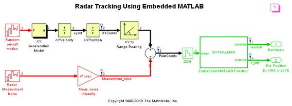
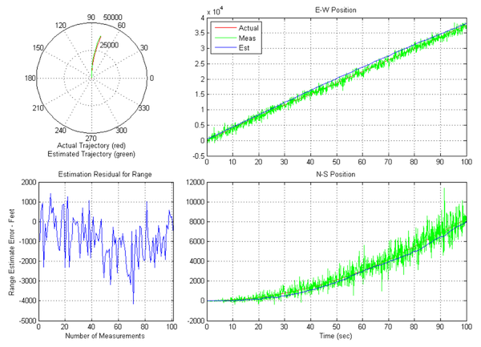

Embedded MATLAB® を使ったレーダー追跡
このデモでは、拡張カルマン フィルターを Embedded MATLAB® Function ブロックと共に Simulink® で使用して、航空機の位置をレーダーの測定値から推定する方法を示します。 フィルター実装は Embedded MATLAB Function ブロックにあり、その内容は Simulink モデル自体に保存されています。
シミュレーションの最後に、 実際の軌跡と推定の軌跡を比較したグラフ、スコープの推定残差のグラフ、実際位置、測定位置、および推定位置を示したグラフが表示されます。
 